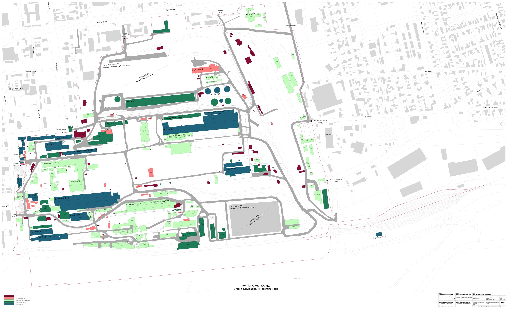

DAM · BETÖLTÉS...
⬡ DAM · DIÓSGYŐRI ACÉLMŰ · MISKOLC
INTERAKTÍV KATASZTERTÉRKÉP · DAM REVITALIZÁCIÓS TANULMÁNY 2024 · SCROLL: ZOOM · DRAG: PAN · SPACE: VÁLTÁS
F = TELJES NÉZET
HOVER: ÉPÜLET INFO

MA
2050
2024
JELENLEGI
JELMAGYARÁZAT
BONTANDÓ
BONTÁSRA JAVASOLT
HASZNOSÍTÁSRA JAVASOLT
HASZNOSÍTANDÓ
VÉDETT ÖRÖKSÉG
HASZNOSÍTÁSRA JAVASOLT
HASZNOSÍTANDÓ
VÉDETT ÖRÖKSÉG
BONTANDÓ / ELTÁVOLÍTOTT
F = TELJES NÉZET
SCROLL = ZOOM
SPACE = VÁLTÁS
130 ha
TERÜLET
65
BONTANDÓ
51
BONTÁSRA JAVASOLT
218
HASZNOSÍTÁSRA JAVASOLT
63
HASZNOSÍTANDÓ
56
VÉDETT ÖRÖKSÉG
2050
CÉLÉV